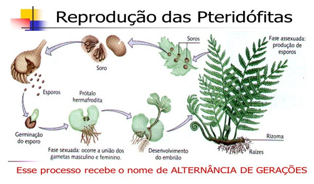

Angiospermas - Video
Briófitas - Texto
Bri, o musgo
Olá! eu sou a Briófita, mas pode me chamar de Bri, sou um musgo. Hoje vou contar a minha história desde que eu era um gametófito até me desenvolver completamente. Antes de falar sobre minha vida vou explicar um pouco sobre o meu filo. Somos plantas geralmente de pequeno porte e vivemos em ambientes úmidos e sombreados. Não possuímos vasos condutores, o que explica o nosso tamanho reduzido. Assim como outros vegetais, possuímos clorofila a e b, carotenoides, amido e celulose. Entre as nossas espécies mais conhecidas, podemos falar da minha espécie o musgo.
A história que contarei a seguir tem início com meus pais e seu caso de romance que logo veio a me gerar por meio de esporângios que foram lançados sobre o tronco de uma árvore caída que até hoje é a nossa grande e confortável casa. Como todo musgo, logo me desenvolvi e comecei a tomar forma de esporófito jovem.
Na minha infância sempre me perguntava a causa do fato de eu ser menor que as minhas amigas, até que um dia minha mãe me explicou que essa diferença era normal, pois nossas espécies eram diferentes e logicamente não seriamos iguais. Muitas vezes por conta disso eu sofria com piadas que minhas colegas faziam.
6 meses se passaram, o que por sinal era uma eternidade, eu amadureci, cresci e conheci o Mus, um musgo lindo e muito gentil. Logo, nos casamos e tivemos nossos filhos, que por sinal foram muitos. Em grande parte nossos filhos seguiram nossos passos e nos deram netos, passando o ciclo de vida dos musgos para a nova geração e garantindo que a espécie sobreviva e garantindo também o apoio e abrigo à microfauna.
Pteridófitas - Texto
Pteridófitas
As pteridófitas são plantas traqueófitas caracterizadas por serem o primeiro grupo vegetal a apresentar tecidos vasculares especializados, sendo eles xilema, que distribui água e solutos pelo corpo do vegetal, atravessando todos os órgãos e formando uma rede de circulação de substancias, e floema que formado por diferentes tipos celulares tem papel de conduzir substâncias orgânicas pelo interior do corpo vegetal. As pteridófitas não possuem raiz, caule, folhas, flores, frutos ou sementes, e podem ser encontradas fixadas a lugares altos com frequência devido a sua capacidade de sintetizar uma substancia que permite a rigidez das células e tecidos de sustentação e condução chamada lignina.
As pteridófitas são plantas encontradas comumente em ambientes úmidos, ideal para estas plantas devido a sua forma de reprodução, que depende da água presente no ambiente. Também devido a isso as pteridófitas preferem locais sombreados, onde há menor perda de água, tanto da planta quanto do ambiente.
As pteridófitas podem reproduzir-se de maneira assexuada e sexuada. Na forma assexuada, podemos observar a reprodução por meio de brotamento, no qual um broto dará origem a um novo indivíduo. Na forma sexuada, observamos um ciclo com alternância de gerações, ou seja, um ciclo que apresenta uma fase de gametófito (que produz gametas) e uma fase de esporófito (que produz esporos).
A reprodução sexuada das pteridófitas ocorre quando os esporófitos amadurecem, eles produzem esporos haploides através de meiose, no interior de estruturas chamadas de esporângios que se encontram reunidos ao longo dos folíolos. Os conjuntos de esporângios formam os soros, que são aqueles pequenos pontos pretos que podemos observar ao longo das folhas das pteridófitas. Os esporângios se rompem e liberam os esporos no ambiente. Quando estes encontram um substrato com condições adequadas de umidade e luminosidade, germinam e dão origem ao gametófito haploide.
O gametófito (ou protalo) é hermafrodita, e, através de divisões mitóticas, produz os gametas masculinos, chamados anterozoides, e os femininos, as oosferas. Quando maduros, e na presença de água, os anterozoides são liberados e fecundam as oosferas. Pode ocorrer tanto a autofecundação quanto a fecundação cruzada, entre gametófitos que estejam próximos um do outro. Em seguida, o gametófito se degenera. A fecundação, ou seja, a união dos anterozoides com as oosferas, origina um zigoto diploide. O zigoto se desenvolve originando um novo esporófito, que corresponde à planta adulta.
Durante a reprodução assexuada os esporângios liberarão os esporos, que cairão no solo e germinarão. A maioria das samambaias produz um gametófito bissexual, ou seja, capaz de produzir anterozoides (gametas masculinos) e oosfera (gameta feminino). Os anterozoides serão produzidos nos anterídios, enquanto a oosfera será produzida no arquegônio.
Nos gametófitos bissexuais, observamos que os anterídios e os arquegônios amadurecem em tempos distintos e, portanto, o anterozoide de um gametófito não pode fecundar a própria oosfera. Nesses casos, os anterozoides produzidos em um gametófito irão fecundar a oosfera de algum gametófito próximo a ele.
Após a fecundação, temos a formação de um zigoto. Esse zigoto irá dividir-se e formar um embrião jovem, diferenciando-se até um esporófito adulto. A partir do momento em que ocorrer o enraizamento do esporófito no solo, o gametófito irá desintegrar-se. O esporófito adulto será responsável por produzir novos esporos, que irão reiniciar o ciclo.
Evolução das Pteridófitas
As pteridófitas são um grupo vegetal com características peculiares surgiu a partir do Siluriano (400ma), ocupando a região de transição entre a água e a terra: as psilófitatas(Psilophytatae). Evoluíram a partir de pteridófitos semelhantes a clorofíceas com talos complexos, alternância de gerações e meristemas apicais. Foram as primeiras plantas terrestres a apresentarem vasos condutores de seiva e estômatos apesar de ainda não possuírem raízes verdadeiras. Para resolver o problema de sustentação em terra firme, cada célula desenvolveu um preenchimento com lignina em sua parede celular que lhe possibilitou maior resistência. A primeira planta, Rhynia, possuía meio metro de altura e era completamente desprovida de folhas. Seu caule era subterrâneo do tipo rizoma, apresentando rizóides. Era composta por talos cilíndricos em cuja extremidade se encontrava o esporófito. Estes talos possuíam cutícula e estômatos. Com relação a origem das primeiras plantas vasculares encontramos explicações que diferem da simples evolução direta a partir dos pteridófitos verdes. Acredita-se que esta origem pode estar em simbioses de pteridófitos verdes e fungos (liquens). A origem pode estar em um parasitismo por fungos que rapidamente se transformou em mutualismo e terminou por uma aquisição por parte da planta hospedeira do genoma fungal. Assim as plantas vasculares evoluíram com as várias contribuições do genoma fungal que levou a especialização de várias células.